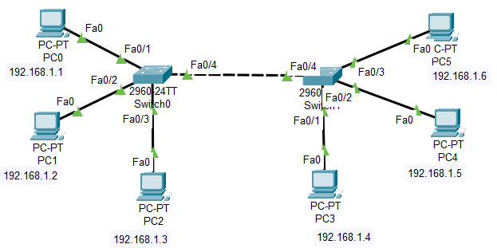
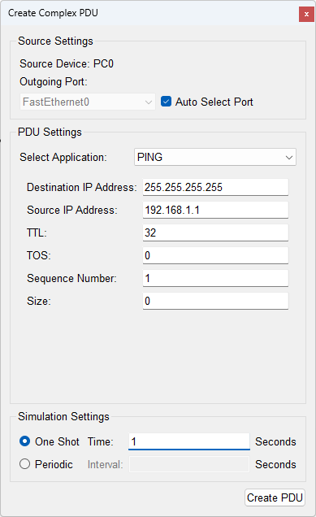

局域网
LAN
实验内容
局域网 LAN
实验目的
掌握局域网 LAN 的规划和配置
使用步骤
搭建拓扑
诺干台 PC
2台 2960 交换机

局域网拓扑
根据拓扑配置各主机IP
利用 Ping 测试各主机之间的连通性
PC0 发送广播：单击"添加复杂 PDU
" → 再单击"PC0"作为广播方 → 定制广播报文 → 创建 PDU

复杂 PDU
查看广播分组的转发过程
思考同一个广播域下面临的问题